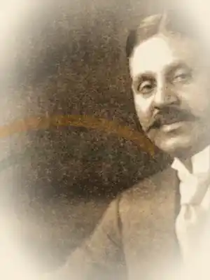

“
I hereby declare the Hon'ble Dr. Rajendra Prasad, as the duly elected permanent Chairman.

Temporary Chairman
Presiding at the opening of the sitting
I hereby declare the Hon'ble Dr. Rajendra Prasad, as the duly elected permanent Chairman.
“ Sinha places before the House a draft reply to international messages of goodwill received on opening day.
“ The valid nomination papers for Rajendra Prasad are read and the absence of another valid nomination is recorded.
“ Sinha declares Rajendra Prasad duly elected permanent Chairman.
“ Kripalani and Maulana Abul Kalam Azad conduct Rajendra Prasad to the Chair.
“ After congratulatory speeches, the temporary Chairman vacates the Chair and Rajendra Prasad assumes it.